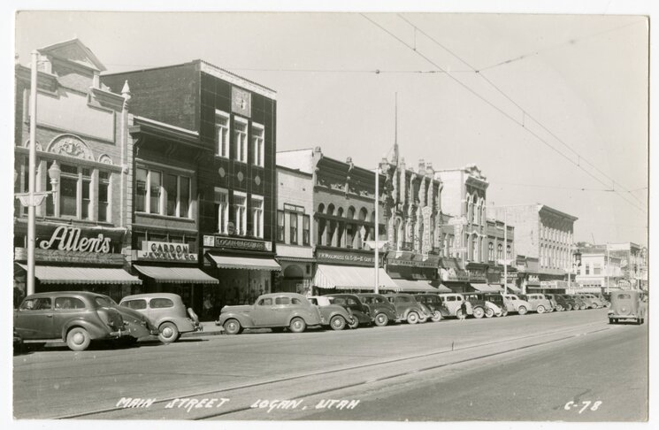

Logan Utah
Demograhics at a glance
- Population (2020): 51,958
- Logan Metro Population: 146,287
- Land area: 17.7 sq mi
- Average Income: $55,406
- Median House Value: $198,500
- White: 86.58%
- Asian: 3.34%
- Black or African American: 1.42%
- Native American: 0.55%
- Native Hawaiian: 0.49%
- Other race: 4.75%
History

Logan Utah was founded by settlers set by Brigham Young in 1859. The new community was named after Ephraim Logan, a fur trapper in the area. Logan was incorporated on January 17, 1866. It became offical on January 17.1866.
Brigham Young College was founded in Logan in August 6, 1877 but was closed in 1926. Utah State Univeristy was founded in 1888, changing its name from Agricultrual College of Utah. USU curretly has a student body count of 27,691.
Logan's growth came mostly from settlers and post-war boom. Logan grew to about 20,000 in the mid-1960s, and contiuned to grow to its current population.